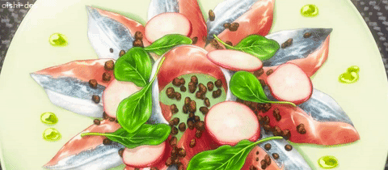

Scorched Pacific Carpaccio

Description
This dish is actually an Italian appetizer that one of the characters presents in the Food Wars anime.
One of the main things that the chef in the anime changes in this dish is the seasoning.
He uses Allspice which is a common seasoning many of us have in our cupboards.
Once you make this amazing dish you will not be disappointed. It tastes just as good as it looked in the anime.
So make sure to try it out when you get the chance!
Ingredients:
- Sashimi grade pacific saury (or some other fish)
- 5-6 red radishes
- Arugula
- 2 tablespoons of extra virgin olive oil
- 1 tablespoon of white wine vinegar
- allspice
- salt
- pepper
- 2 tablespoons of soy sauce
- 2 tablespoons of mirin
- 2 tablespoons of sake
Steps:
- First slice the sashimi. Guide to cutting sashimi.
- Blowtorch or sear each slice on a pan if you wish.
- Thinly slice red radishes.
- Into a bowl, add in 2 tablespoons each of soy sauce, mirin, and sake. Whisk everything together until combined. Then add 2 tablespoons of extra virgin olive oil, 1 tablespoon of white wine vinegar, a dash of allspice, salt, and pepper. Reduce in a pan until boiling.
- On a plate, arrange the fish and radishes in a circular pattern. Place a handful of arugula in the center of the dish and carefully drizzle the vinaigrette over top.
Go Back to Menu